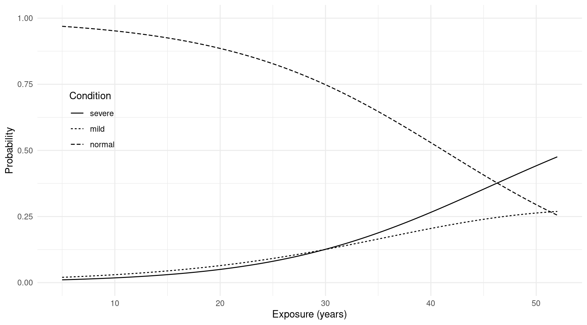
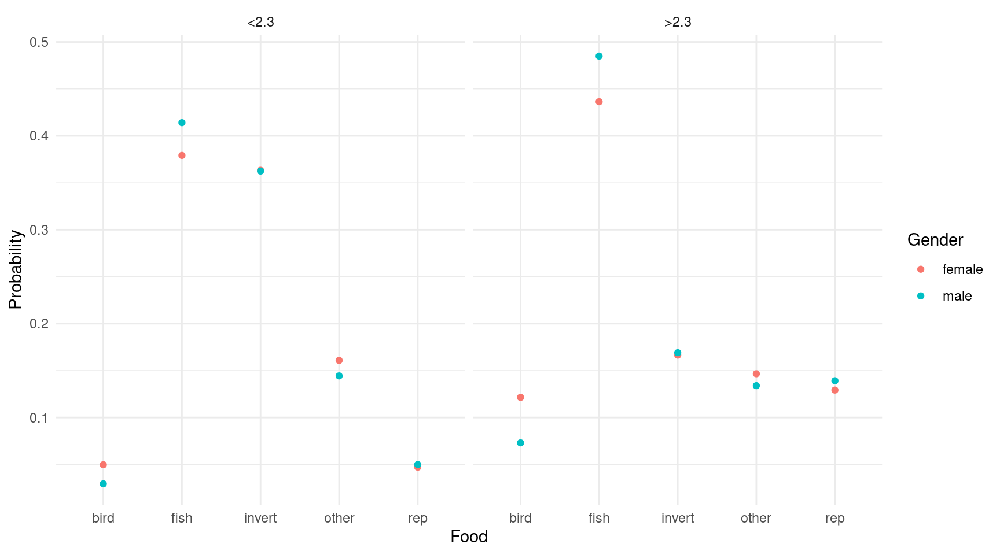

You can also download a PDF copy of this lecture.
Recall that a logistic regression model can be written as \[ \log\left[\frac{P(Y_i=1)}{1 - P(Y_i=1)}\right] = \beta_0 + \beta_1 x_{i1} + \dots + \beta_k x_{ik}. \] This can also be written as \[ \log(\pi_{i2}/\pi_{i1}) = \beta_0 + \beta_1 x_{i1} + \dots + \beta_k x_{ik}, \] or \[ \pi_{i2}/\pi_{i1} = e^{\beta_0}e^{\beta_1 x_{i1}} \cdots e^{\beta_k x_{ik}}, \] where \[\begin{align*} \pi_{i2} & = P(Y_i = 1), \\ \pi_{i1} & = P(Y_i = 0). \end{align*}\] Here the ratio of probabilities \(\pi_{i2}/\pi_{i1}\) is the odds that \(Y_i = 1\) rather than \(Y_i = 0\). Note that odds are basically the probability of one event relative to that of another event.
Let \(Y_i = 1, 2, \dots, R\) denote \(R\) categories, but not necessarily ordered in any way, and let \(\pi_{i1}, \pi_{i2}, \dots, \pi_{iR}\) denote the probability of each category. The multinomial logistic regression model can be written as \[\begin{align*} \log(\pi_{i2}/\pi_{i1}) & = \beta_0^{(2)} + \beta_1^{(2)} x_{i1} + \dots + \beta_k^{(2)} x_{ik}, \\ \log(\pi_{i3}/\pi_{i1}) & = \beta_0^{(3)} + \beta_1^{(3)} x_{i1} + \dots + \beta_k^{(3)} x_{ik}, \\ \ & \vdots \\ \log(\pi_{iR}/\pi_{i1}) & = \beta_0^{(R)} + \beta_1^{(R)} x_{i1} + \dots + \beta_k^{(R)} x_{ik}, \end{align*}\] for a system of \(R-1\) equations. This can also be written as \[\begin{align*} \pi_{i2}/\pi_{i1} & = e^{\beta_0^{(2)}}e^{\beta_1^{(2)} x_{i1}} \cdots e^{\beta_k^{(2)} x_{ik}}, \\ \pi_{i3}/\pi_{i1} & = e^{\beta_0^{(3)}}e^{\beta_1^{(3)} x_{i1}} \cdots e^{\beta_k^{(3)} x_{ik}}, \\ \ & \vdots \\ \pi_{iR}/\pi_{i1} & = e^{\beta_0^{(4)}}e^{\beta_1^{(4)} x_{i1}} \cdots e^{\beta_k^{(4)} x_{ik}}, \end{align*}\] so that the model relates the odds of categories 2 through \(R\) relative to the first category (often called a “baseline” or “reference” category). For example, \(\pi_{i3}/\pi_{i1}\) is the odds of the third category versus the first category. Applying the exponential function to a parameter or contrast gives an odds ratio that concerns the change in this odds.
Some algebra shows that the category probabilities can be written as \[\begin{align*} \pi_{i1} & = 1 - (\pi_{i2} + \pi_{i3} + \dots + \pi_{iR}), \\ \pi_{i2} & = \frac{e^{\eta_{i2}}}{1 + e^{\eta_{i2}} + e^{\eta_{i3}} + \dots + e^{\eta_{iR}}} \\ \pi_{i3} & = \frac{e^{\eta_{i3}}}{1 + e^{\eta_{i2}} + e^{\eta_{i3}} + \dots + e^{\eta_{iR}}} \\ \ & \vdots \\ \pi_{iR} & = \frac{e^{\eta_{ir}}}{1 + e^{\eta_{i2}} + e^{\eta_{i3}} + \dots + e^{\eta_{iR}}} \end{align*}\] where \[\begin{align*} \eta_{i2} & = \beta_0^{(2)} + \beta_1^{(2)} x_{i1} + \dots + \beta_k^{(2)} x_{ik}, \\ \eta_{i3} & = \beta_0^{(3)} + \beta_1^{(3)} x_{i1} + \dots + \beta_k^{(3)} x_{ik}, \\ \ & \vdots \\ \eta_{iR} & = \beta_0^{(R)} + \beta_1^{(R)} x_{i1} + \dots + \beta_k^{(R)} x_{ik}. \end{align*}\] We can write this more compactly as \[ \pi_{ic} = \frac{e^{\eta_{ic}}}{1 + \sum_{t=2}^{K} e^{\eta_{it}}} \] or \[ \pi_{ic} = \frac{e^{\eta_{ic}}}{\sum_{t=1}^{K} e^{\eta_{it}}}, \] if we let \(\eta_{i1} = 0\) since \(e^0 = 1\). This is useful for computing and plotting estimated probabilities for each category of the response variable.
Example: Let’s consider again the
pneumo data from the VGAM package.
library(VGAM)
m <- vglm(cbind(normal, mild, severe) ~ exposure.time,
family = multinomial(refLevel = "normal"), data = pneumo)
summary(m)
Call:
vglm(formula = cbind(normal, mild, severe) ~ exposure.time, family = multinomial(refLevel = "normal"),
data = pneumo)
Coefficients:
Estimate Std. Error z value Pr(>|z|)
(Intercept):1 -4.2917 0.5214 -8.23 < 2e-16 ***
(Intercept):2 -5.0598 0.5964 -8.48 < 2e-16 ***
exposure.time:1 0.0836 0.0153 5.47 4.5e-08 ***
exposure.time:2 0.1093 0.0165 6.64 3.2e-11 ***
---
Signif. codes: 0 '***' 0.001 '**' 0.01 '*' 0.05 '.' 0.1 ' ' 1
Names of linear predictors: log(mu[,2]/mu[,1]), log(mu[,3]/mu[,1])
Residual deviance: 13.93 on 12 degrees of freedom
Log-likelihood: -29.54 on 12 degrees of freedom
Number of Fisher scoring iterations: 5
Warning: Hauck-Donner effect detected in the following estimate(s):
'(Intercept):1', '(Intercept):2'
Reference group is level 1 of the responseNote: The categories/levels of the response variable correspond to
the order they are specified in cbind.
Odds ratios can be obtained in the usual way.
exp(cbind(coef(m), confint(m))) 2.5 % 97.5 %
(Intercept):1 0.013682 0.004924 0.03802
(Intercept):2 0.006347 0.001972 0.02043
exposure.time:1 1.087156 1.055079 1.12021
exposure.time:2 1.115481 1.080048 1.15208Here is another nice way to output the parameter estimates.
t(coef(m, matrix = TRUE)) (Intercept) exposure.time
log(mu[,2]/mu[,1]) -4.292 0.08357
log(mu[,3]/mu[,1]) -5.060 0.10929Then we can obtain odds ratio as follows.
exp(t(coef(m, matrix = TRUE))) (Intercept) exposure.time
log(mu[,2]/mu[,1]) 0.013682 1.087
log(mu[,3]/mu[,1]) 0.006347 1.115Plotting the estimated category probabilities can be done as with previous models. First we create a data frame of estimated probabilities by exposure time and category.
d <- data.frame(exposure.time = seq(5, 52, length = 100))
d <- cbind(d, predict(m, newdata = d, type = "response"))
head(d) exposure.time normal mild severe
1 5.000 0.9692 0.02014 0.01062
2 5.475 0.9679 0.02093 0.01117
3 5.949 0.9665 0.02174 0.01175
4 6.424 0.9651 0.02259 0.01236
5 6.899 0.9635 0.02346 0.01300
6 7.374 0.9620 0.02437 0.01367library(tidyr)
d <- d %>% pivot_longer(cols = c(normal, mild, severe),
names_to = "condition", values_to = "probability")
head(d)# A tibble: 6 × 3
exposure.time condition probability
<dbl> <chr> <dbl>
1 5 normal 0.969
2 5 mild 0.0201
3 5 severe 0.0106
4 5.47 normal 0.968
5 5.47 mild 0.0209
6 5.47 severe 0.0112Next I reorder the factor levels just for aesthetic purposes.
d$condition <- factor(d$condition, levels = c("severe","mild","normal"))And then finally we plot.
p <- ggplot(d, aes(x = exposure.time, y = probability)) +
geom_line(aes(linetype = condition)) +
ylim(0, 1) + theme_minimal() + theme(legend.position = c(0.1, 0.6)) +
labs(x = "Exposure (years)", y = "Probability", linetype = "Condition")
plot(p)
Example: Consider the data frame
alligator from the EffectStars
package.
library(EffectStars)
data(alligator)
head(alligator) Food Size Gender Lake
1 fish <2.3 male Hancock
2 fish <2.3 male Hancock
3 fish <2.3 male Hancock
4 fish <2.3 male Hancock
5 fish <2.3 male Hancock
6 fish <2.3 male Hancocksummary(alligator) Food Size Gender Lake
bird :13 <2.3:124 female: 89 George :63
fish :94 >2.3: 95 male :130 Hancock :55
invert:61 Oklawaha:48
other :32 Trafford:53
rep :19 For illustration we will just consider just size and gender as explanatory variables.
m <- vglm(Food ~ Gender + Size, data = alligator,
family = multinomial(refLevel = "bird"))
summary(m)
Call:
vglm(formula = Food ~ Gender + Size, family = multinomial(refLevel = "bird"),
data = alligator)
Coefficients:
Estimate Std. Error z value Pr(>|z|)
(Intercept):1 2.0324 0.5204 3.91 9.4e-05 ***
(Intercept):2 1.9897 0.5265 3.78 0.00016 ***
(Intercept):3 1.1748 0.5640 2.08 0.03724 *
(Intercept):4 -0.0526 0.6829 -0.08 0.93859
Gendermale:1 0.6149 0.6338 0.97 0.33197
Gendermale:2 0.5247 0.6589 0.80 0.42585
Gendermale:3 0.4185 0.7030 0.60 0.55162
Gendermale:4 0.5833 0.7841 0.74 0.45691
Size>2.3:1 -0.7535 0.6439 -1.17 0.24193
Size>2.3:2 -1.6746 0.6788 -2.47 0.01362 *
Size>2.3:3 -0.9865 0.7143 -1.38 0.16723
Size>2.3:4 0.1145 0.7962 0.14 0.88565
---
Signif. codes: 0 '***' 0.001 '**' 0.01 '*' 0.05 '.' 0.1 ' ' 1
Names of linear predictors: log(mu[,2]/mu[,1]), log(mu[,3]/mu[,1]), log(mu[,4]/mu[,1]),
log(mu[,5]/mu[,1])
Residual deviance: 588.2 on 864 degrees of freedom
Log-likelihood: -294.1 on 864 degrees of freedom
Number of Fisher scoring iterations: 5
No Hauck-Donner effect found in any of the estimates
Reference group is level 1 of the responseTo help interpret the output let’s check the level order.
levels(alligator$Food)[1] "bird" "fish" "invert" "other" "rep" Extract parameter estimates and confidence intervals.
cbind(coef(m), confint(m)) 2.5 % 97.5 %
(Intercept):1 2.03238 1.01239 3.0524
(Intercept):2 1.98965 0.95773 3.0216
(Intercept):3 1.17478 0.06944 2.2801
(Intercept):4 -0.05261 -1.39099 1.2858
Gendermale:1 0.61487 -0.62732 1.8571
Gendermale:2 0.52467 -0.76669 1.8160
Gendermale:3 0.41850 -0.95931 1.7963
Gendermale:4 0.58333 -0.95348 2.1201
Size>2.3:1 -0.75351 -2.01561 0.5086
Size>2.3:2 -1.67459 -3.00492 -0.3443
Size>2.3:3 -0.98650 -2.38642 0.4134
Size>2.3:4 0.11450 -1.44597 1.6750t(coef(m, matrix = TRUE)) (Intercept) Gendermale Size>2.3
log(mu[,2]/mu[,1]) 2.03238 0.6149 -0.7535
log(mu[,3]/mu[,1]) 1.98965 0.5247 -1.6746
log(mu[,4]/mu[,1]) 1.17478 0.4185 -0.9865
log(mu[,5]/mu[,1]) -0.05261 0.5833 0.1145Compute odds ratios.
exp(t(coef(m, matrix = TRUE))) (Intercept) Gendermale Size>2.3
log(mu[,2]/mu[,1]) 7.6322 1.849 0.4707
log(mu[,3]/mu[,1]) 7.3130 1.690 0.1874
log(mu[,4]/mu[,1]) 3.2374 1.520 0.3729
log(mu[,5]/mu[,1]) 0.9487 1.792 1.1213Note that we can change the reference/baseline category. This changes the model parameterization but does not change the estimated probabilities.
Joint tests of the parameters for each explanatory variable can be
conducted (via a likelihood ratio test) using anova.
anova(m)Analysis of Deviance Table (Type II tests)
Model: 'multinomial', 'VGAMcategorical'
Link: 'multilogitlink'
Response: Food
Df Deviance Resid. Df Resid. Dev Pr(>Chi)
Gender 4 1.03 868 589 0.9052
Size 4 14.08 868 602 0.0071 **
---
Signif. codes: 0 '***' 0.001 '**' 0.01 '*' 0.05 '.' 0.1 ' ' 1Note that for other models we should use anova by
specifying a null model, but here the anova function does
that automatically.
Here are the estimated probabilities.
d <- expand.grid(Gender = c("female","male"), Size = c("<2.3",">2.3"))
d <- cbind(d, predict(m, newdata = d, type = "response"))
head(d) Gender Size bird fish invert other rep
1 female <2.3 0.04967 0.3791 0.3633 0.1608 0.04713
2 male <2.3 0.02933 0.4140 0.3625 0.1443 0.04987
3 female >2.3 0.12145 0.4363 0.1664 0.1466 0.12920
4 male >2.3 0.07299 0.4849 0.1690 0.1339 0.13914library(tidyr)
d <- d %>% pivot_longer(cols = c(bird, fish, invert, other, rep),
names_to = "food", values_to = "probability")
head(d)# A tibble: 6 × 4
Gender Size food probability
<fct> <fct> <chr> <dbl>
1 female <2.3 bird 0.0497
2 female <2.3 fish 0.379
3 female <2.3 invert 0.363
4 female <2.3 other 0.161
5 female <2.3 rep 0.0471
6 male <2.3 bird 0.0293p <- ggplot(d, aes(x = food, y = probability)) + theme_minimal() +
geom_point(aes(color = Gender)) + facet_wrap(~ Size) +
labs(x = "Food", y = "Probability", color = "Gender")
plot(p)
The multinomial logit model can be extended when explanatory
variables vary by response category. For example, consider the
data frame TravelMode from the AER
package.
library(AER)
data(TravelMode)
head(TravelMode, 8) individual mode choice wait vcost travel gcost income size
1 1 air no 69 59 100 70 35 1
2 1 train no 34 31 372 71 35 1
3 1 bus no 35 25 417 70 35 1
4 1 car yes 0 10 180 30 35 1
5 2 air no 64 58 68 68 30 2
6 2 train no 44 31 354 84 30 2
7 2 bus no 53 25 399 85 30 2
8 2 car yes 0 11 255 50 30 2Here waiting time (wait), vehicle cost
(vcost), and travel time (travel) vary by
travel mode, but household income (income) varies only by
the respondent. For simplicity let’s only consider waiting time and
income as explanatory variables. A multinomial logit model can then be
written as \[\begin{align*}
\log(\pi_{ia}/\pi_{ic}) & = \beta_0^{(a)} + \beta_1
(\text{wait}_i^{(a)} - \text{wait}_i^{(c)}) + \beta_2^{(a)}
\text{income}_i, \\
\log(\pi_{it}/\pi_{ic}) & = \beta_0^{(t)} + \beta_1
(\text{wait}_i^{(t)} - \text{wait}_i^{(c)}) + \beta_2^{(t)}
\text{income}_i, \\
\log(\pi_{ib}/\pi_{ic}) & = \beta_0^{(b)} + \beta_1
(\text{wait}_i^{(b)} - \text{wait}_i^{(c)}) + \beta_2^{(b)}
\text{income}_i. \\
\end{align*}\] If we define \[\begin{align*}
\eta_i^{(a)} & = \beta_0^{(a)} + \beta_1 (\text{wait}_i^{(a)} -
\text{wait}_i^{(c)}) + \beta_2^{(a)} \text{income}_i, \\
\eta_i^{(t)} & = \beta_0^{(t)} + \beta_1 (\text{wait}_i^{(t)} -
\text{wait}_i^{(c)}) + \beta_2^{(t)} \text{income}_i, \\
\eta_i^{(b)} & = \beta_0^{(b)} + \beta_1 (\text{wait}_i^{(b)} -
\text{wait}_i^{(c)}) + \beta_2^{(b)} \text{income}_i,
\end{align*}\] and \(\eta_i^{(c)} =
0\), then we can write the category probabilities as \[\begin{align*}
\pi_{ia} & = \frac{e^{\eta_i^{(a)}}}{e^{\eta_i^{(a)}} +
e^{\eta_i^{(t)}} + e^{\eta_i^{(b)}} + e^{\eta_i^{(c)}}}, \\
\pi_{it} & = \frac{e^{\eta_i^{(t)}}}{e^{\eta_i^{(a)}} +
e^{\eta_i^{(t)}} + e^{\eta_i^{(b)}} + e^{\eta_i^{(c)}}}, \\
\pi_{ib} & = \frac{e^{\eta_i^{(b)}}}{e^{\eta_i^{(a)}} +
e^{\eta_i^{(t)}} + e^{\eta_i^{(b)}} + e^{\eta_i^{(c)}}}, \\
\pi_{ic} & = \frac{e^{\eta_i^{(c)}}}{e^{\eta_i^{(a)}} +
e^{\eta_i^{(t)}} + e^{\eta_i^{(b)}} + e^{\eta_i^{(c)}}}.
\end{align*}\] The quantities \(e^{\eta_i^{(a)}}\), \(e^{\eta_i^{(b)}}\), \(e^{\eta_i^{(b)}}\), and \(e^{\eta_i^{(c)}}\) could be loosely
interpreted as the relative value or “utility” of each response/choice
to the respondent/chooser.
Example: The mlogit function from the
mlogit package will estimate a multinomial logistic
regression model of this type.1
library(mlogit)
m <- mlogit(choice ~ wait | income, reflevel = "car",
alt.var = "mode", chid.var = "individual", data = TravelMode)
summary(m)
Call:
mlogit(formula = choice ~ wait | income, data = TravelMode, reflevel = "car",
alt.var = "mode", chid.var = "individual", method = "nr")
Frequencies of alternatives:choice
car air train bus
0.281 0.276 0.300 0.143
nr method
5 iterations, 0h:0m:0s
g'(-H)^-1g = 0.000429
successive function values within tolerance limits
Coefficients :
Estimate Std. Error z-value Pr(>|z|)
(Intercept):air 5.98299 0.80797 7.40 1.3e-13 ***
(Intercept):train 5.49392 0.63354 8.67 < 2e-16 ***
(Intercept):bus 4.10653 0.67020 6.13 8.9e-10 ***
wait -0.09773 0.01053 -9.28 < 2e-16 ***
income:air -0.00597 0.01151 -0.52 0.604
income:train -0.06353 0.01367 -4.65 3.4e-06 ***
income:bus -0.03002 0.01511 -1.99 0.047 *
---
Signif. codes: 0 '***' 0.001 '**' 0.01 '*' 0.05 '.' 0.1 ' ' 1
Log-Likelihood: -192
McFadden R^2: 0.322
Likelihood ratio test : chisq = 183 (p.value = <2e-16)cbind(coef(m), confint(m)) 2.5 % 97.5 %
(Intercept):air 5.982989 4.39940 7.5665779
(Intercept):train 5.493920 4.25221 6.7356264
(Intercept):bus 4.106526 2.79295 5.4201038
wait -0.097731 -0.11838 -0.0770853
income:air -0.005967 -0.02853 0.0165931
income:train -0.063531 -0.09033 -0.0367306
income:bus -0.030019 -0.05964 -0.0003948exp(cbind(coef(m), confint(m))) 2.5 % 97.5 %
(Intercept):air 396.6241 81.4020 1932.5157
(Intercept):train 243.2087 70.2608 841.8706
(Intercept):bus 60.7354 16.3291 225.9026
wait 0.9069 0.8884 0.9258
income:air 0.9941 0.9719 1.0167
income:train 0.9384 0.9136 0.9639
income:bus 0.9704 0.9421 0.9996Example: Here the response variable is the choice of
one of three types of soda. Note that the PoEdata
package must be installed using
devtools::install_github("https://github.com/ccolonescu/PoEdata").
library(dplyr)
library(PoEdata)
data(cola)
mycola <- cola %>% mutate(mode = rep(c("Pepsi","7-Up","Coke"), n()/3)) %>%
select(id, mode, choice, price, feature, display) %>%
mutate(feature = factor(feature, levels = 0:1, labels = c("no","yes"))) %>%
mutate(display = factor(display, levels = 0:1, labels = c("no","yes")))
head(mycola) id mode choice price feature display
1 1 Pepsi 0 1.79 no no
2 1 7-Up 0 1.79 no no
3 1 Coke 1 1.79 no no
4 2 Pepsi 0 1.79 no no
5 2 7-Up 0 1.79 no no
6 2 Coke 1 0.89 yes yesm <- mlogit(choice ~ price + feature + display | 1, data = mycola,
alt.var = "mode", chid.var = "id")
summary(m)
Call:
mlogit(formula = choice ~ price + feature + display | 1, data = mycola,
alt.var = "mode", chid.var = "id", method = "nr")
Frequencies of alternatives:choice
7-Up Coke Pepsi
0.374 0.280 0.346
nr method
4 iterations, 0h:0m:0s
g'(-H)^-1g = 0.00174
successive function values within tolerance limits
Coefficients :
Estimate Std. Error z-value Pr(>|z|)
(Intercept):Coke -0.0907 0.0640 -1.42 0.1564
(Intercept):Pepsi 0.1934 0.0620 3.12 0.0018 **
price -1.8492 0.1887 -9.80 < 2e-16 ***
featureyes -0.0409 0.0831 -0.49 0.6229
displayyes 0.4727 0.0935 5.05 4.3e-07 ***
---
Signif. codes: 0 '***' 0.001 '**' 0.01 '*' 0.05 '.' 0.1 ' ' 1
Log-Likelihood: -1810
McFadden R^2: 0.0891
Likelihood ratio test : chisq = 354 (p.value = <2e-16)exp(cbind(coef(m), confint(m))) 2.5 % 97.5 %
(Intercept):Coke 0.9133 0.8057 1.0353
(Intercept):Pepsi 1.2134 1.0745 1.3702
price 0.1574 0.1087 0.2278
featureyes 0.9600 0.8157 1.1297
displayyes 1.6043 1.3355 1.9271Example: Consider the following data on choices of two options of traveling by train.
library(mlogit)
data(Train)
head(Train) id choiceid choice price_A time_A change_A comfort_A price_B time_B change_B comfort_B
1 1 1 A 2400 150 0 1 4000 150 0 1
2 1 2 A 2400 150 0 1 3200 130 0 1
3 1 3 A 2400 115 0 1 4000 115 0 0
4 1 4 B 4000 130 0 1 3200 150 0 0
5 1 5 B 2400 150 0 1 3200 150 0 0
6 1 6 B 4000 115 0 0 2400 130 0 0There are multiple choices for each respondent (id),
which can induce dependencies among the observations, but we will ignore
that here. With only two choices the model reduces to logistic
regression where we use the differences of the properties of
the choices as explanatory variables.
m <- glm(choice == "A" ~ I(price_A - price_B) + I(time_A - time_B),
family = binomial, data = Train)
summary(m)$coefficients Estimate Std. Error z value Pr(>|z|)
(Intercept) 0.018735 3.936e-02 0.476 6.341e-01
I(price_A - price_B) -0.001024 5.939e-05 -17.237 1.400e-66
I(time_A - time_B) -0.013968 2.288e-03 -6.106 1.021e-09exp(cbind(coef(m), confint(m))) 2.5 % 97.5 %
(Intercept) 1.0189 0.9433 1.1007
I(price_A - price_B) 0.9990 0.9989 0.9991
I(time_A - time_B) 0.9861 0.9817 0.9905The price is in cents of guilders and the time is in minutes. For interpretation let’s convert the scale of these variables to guilders (equal to 100 cents) and hours (equal to 60 minutes).
m <- glm(choice == "A" ~ I((price_A - price_B)/100) + I((time_A - time_B)/60),
family = binomial, data = Train)
summary(m)$coefficients Estimate Std. Error z value Pr(>|z|)
(Intercept) 0.01874 0.039362 0.476 6.341e-01
I((price_A - price_B)/100) -0.10236 0.005939 -17.237 1.400e-66
I((time_A - time_B)/60) -0.83808 0.137251 -6.106 1.021e-09exp(cbind(coef(m), confint(m))) 2.5 % 97.5 %
(Intercept) 1.0189 0.9433 1.1007
I((price_A - price_B)/100) 0.9027 0.8921 0.9131
I((time_A - time_B)/60) 0.4325 0.3301 0.5654Here is how we would estimate this model using mlogit.
The data first need to be reformatted which can be done using the
dfidx function from the mlogit
package.
mytrain <- dfidx(Train, shape = "wide", choice = "choice",
varying = 4:11, sep = "_")
head(mytrain)~~~~~~~
first 10 observations out of 5858
~~~~~~~
id choiceid choice price time change comfort idx
1 1 1 TRUE 2400 150 0 1 1:A
2 1 1 FALSE 4000 150 0 1 1:B
3 1 2 TRUE 2400 150 0 1 2:A
4 1 2 FALSE 3200 130 0 1 2:B
5 1 3 TRUE 2400 115 0 1 3:A
6 1 3 FALSE 4000 115 0 0 3:B
7 1 4 FALSE 4000 130 0 1 4:A
8 1 4 TRUE 3200 150 0 0 4:B
9 1 5 FALSE 2400 150 0 1 5:A
10 1 5 TRUE 3200 150 0 0 5:B
~~~ indexes ~~~~
id1 id2
1 1 A
2 1 B
3 2 A
4 2 B
5 3 A
6 3 B
7 4 A
8 4 B
9 5 A
10 5 B
indexes: 1, 2 m <- mlogit(choice ~ I(price/100) + I(time/60) | -1, data = mytrain)
summary(m)
Call:
mlogit(formula = choice ~ I(price/100) + I(time/60) | -1, data = mytrain,
method = "nr")
Frequencies of alternatives:choice
A B
0.503 0.497
nr method
4 iterations, 0h:0m:0s
g'(-H)^-1g = 1.86E-07
gradient close to zero
Coefficients :
Estimate Std. Error z-value Pr(>|z|)
I(price/100) -0.10235 0.00594 -17.2 < 2e-16 ***
I(time/60) -0.83684 0.13722 -6.1 1.1e-09 ***
---
Signif. codes: 0 '***' 0.001 '**' 0.01 '*' 0.05 '.' 0.1 ' ' 1
Log-Likelihood: -1850This model can also be estimated using the
vglm function from the VGAM package,
although the syntax is very different.↩︎